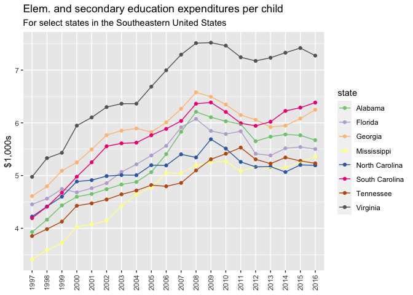

The not-for-profit organization the Urban Institute created an incredible dataset on State-by-State Spending on Kids that is available here.
This data package provides this dataset through R. It is formatted as tidy data to facilitate analysis within the tidyverse suite of R packages.
The data was made available by and is attributable to Julia Isaacs, Eleanor Lauderback, and Erica Greenberg under the under the ODC Attribution License (https://opendatacommons.org/licenses/by/1-0/).
You can install {tidykids} only from GitHub with:
remotes::install_github("jrosen48/tidykids")
First, load the {tidykids} package:
library(tidykids)
Then, type tidykids to load the data:
tidykids #> # A tibble: 70,380 x 4 #> state variable year value #> <chr> <chr> <chr> <dbl> #> 1 Alabama PK12ed 1997 3271969 #> 2 Alaska PK12ed 1997 1042311 #> 3 Arizona PK12ed 1997 3388165 #> 4 Arkansas PK12ed 1997 1960613 #> 5 California PK12ed 1997 28708364 #> 6 Colorado PK12ed 1997 3332994 #> 7 Connecticut PK12ed 1997 4014870 #> 8 Delaware PK12ed 1997 776825 #> 9 District of Columbia PK12ed 1997 544051 #> 10 Florida PK12ed 1997 11498394 #> # … with 70,370 more rows
To see descriptions of the variables (also available here):
tidykids_data_dictionary #> # A tibble: 69 x 5 #> variable variable measurement_unit allowed_values description #> <chr> <chr> <chr> <chr> <chr> #> 1 Elementary and… PK12ed Numeric 0- Public spending o… #> 2 Elementary and… PK12ed_re… Numeric 0- Public spending o… #> 3 Elementary and… PK12ed_re… Numeric 0- Public spending o… #> 4 Higher educati… highered Numeric 0- Public spending o… #> 5 Higher educati… highered_… Numeric 0- Public spending o… #> 6 Higher educati… highered_… Numeric 0- Public spending o… #> 7 Education subs… edsubs Numeric 0- Public spending o… #> 8 Education subs… edsubs_re… Numeric 0- Public spending o… #> 9 Education subs… edsubs_re… Numeric 0- Public spending o… #> 10 Education serv… edservs Numeric 0- Public spending o… #> # … with 59 more rows
These are also presented in an easily-readable format in the tidykids-codebook vignette.
The data can be easily visualized, e.g.:
library(dplyr, warn.conflicts = FALSE) library(ggplot2) tidykids %>% filter(variable %in% c("PK12ed_realperch", "highered_realperch"), state %in% c("Tennessee", "Michigan", "North Carolina")) %>% ggplot(aes(x = year, y = value, color = state, group = state)) + geom_point() + geom_line() + theme(axis.text.x = element_text(angle = 90, vjust = 0.5, hjust=1)) + facet_wrap(~variable) + ggtitle("Elem. and secondary education and higher education expenditures per child")
